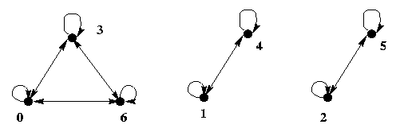
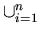

Relation
Equivalence Relation
Subjects to be Learned
- equivalence relation
- equivalence class
- partition
Contents
On the face of most clocks, hours are represented by integers between 1 and 12.
However, since a day has 24 hours after 12 hours, a clock goes back to hour 1,
and starts all over again from there. Thus each pair of hours such as 1 and 13,
2 and 14,
etc. share one number 1, 2, ...etc., respectively. The same applies when we are interested in more than 24 hours. 25th hour is 1, so are 37th, 49th etc.
What we are doing here essentially is that we consider the numbers in each group
such as 1, 13, 25, ..., equivalent in the sense that they all are
represented by one number (they are congruent modulo 12). Being representable by one
number such as we see on clocks is a binary relation on the set of natural numbers and it is an example of equivalence relation we are going to study here.
The concept of equivalence relation is characterized by three properties
as follows:
Definition(equivalence relation): A binary relation R on a set A is an
equivalence relation if and only if
(1) R is reflexive
(2) R is symmetric, and
(3) R is transitive.
Example 1: The equality relation (=) on a set of numbers such as
{1, 2, 3} is an equivalence relation.
Example 2: The congruent modulo m relation on the set of integers
i.e.
{<a, b>|
a
b (mod m)}, where m is a positive integer
greater than 1, is an equivalence relation.
Note that the equivalence relation on hours on a clock is the congruent mod 12,
and that when m = 2, i.e. the congruent mod 2, all even numbers are equivalent
and all odd numbers
are equivalent. Thus the set of integers are divided into two subsets: evens and odds.
Example 3: Taking this discrete structures course together this semester
is another equivalence relation.
Equivalence relations can also be represented by a digraph since they are a binary
relation on a set.
For example the digraph of the equivalence relation congruent mod 3
on {0, 1,
2, 3, 4, 5 , 6} is as shown below. It consists of three connected components.

The set of even numbers and that of odd numbers in the equivalence relation of
congruent mod 2, and the set of integers equivalent to a number between 1 and 12
in the equivalence relation on hours in the clock example are called
an equivalence class. Formally it is defined as follows:
Definition(equivalence class): For an equivalence relation R on a set A,
the set of the elements of A that are related to an element, say a, of A
is called the equivalence class of element a and it is denoted
by [a].
Example 4: For the equivalence relation of hours on a clock, equivalence classes are
[1] = {1, 13, 25, ... }
= {1+ 12n: n  N} ,
N} ,
[2] = {2, 14, 26, ... } = {2+ 12n: n N}
,
........,
where N is the set of natural numbers.
There are altogether twelve of them.
For an equivalence relation R on a set A, every element of A is in an
equivalence class. For if an element, say b , does not belong to the equivalence
class of
any other element in A, then the set consisting of the element b itself
is an equivalence class. Thus the set A is in a sense covered by the
equivalence classes. Another property of equivalence class is that equivalence
classes of two elements of a set A are either disjoint or identical, that is
either [a] = [b] or [a]  [b] =
[b] =  for arbitrary elements a and b of A. Thus the set A
is partitioned into equivalence classes
by an equivalence relation on A. This is formally stated as a theorem below after
the definition of partition.
for arbitrary elements a and b of A. Thus the set A
is partitioned into equivalence classes
by an equivalence relation on A. This is formally stated as a theorem below after
the definition of partition.
Definition (partition): Let A be a set and let A1, A2, ...,
An be subsets of A. Then {A1,
A2, ..., An} is a
partition
of A, if and only if
(1)

Ai
= A, and
(2)
Ai
Aj
= ,
if Ai  Aj ,
1
Aj ,
1
 i, j
n .
i, j
n .
Example 5: Let A = {1, 2, 3, 4, 5}, A1 = {1, 5},
A2 = {3}, and A3 = {2, 4}. Then
{A1, A2, A3}
is a partition of A. However, B1 = {1, 2, 5},
B2 = {2, 3},
and B3 = {4} do not form a partition for A because
B1
B2
,
though B1
B2.
Theorem 1: The set of equivalence classes of an equivalence relation on a set A
is a partition of A.
Conversely, a partition of a set A determines an equivalence
relation on A.
Theorem 2: Let {A1, ..., An} be a partition of
a set A.
Define a binary relation R on A as follows: <a, b>
R if and only if
a
Ai and b
Ai for some i,
1
i
n .
Then R is
an equivalence relation.
Theorem 3: Let R1 and R2
be equivalence relations. Then
R1
R2
is an equivalence relation, but
R1
R2
is not necessarily an equivalence relation.
Test Your Understanding of Equivalence Relation
Indicate which of the following statements are correct and which are not.
Click Yes or No , then Submit. There are two sets of questions.
Next -- Order Relation
Back to Schedule
Back to Table of Contents